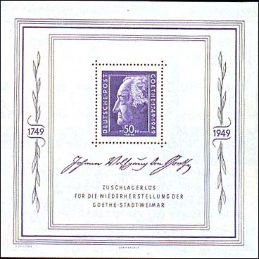
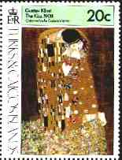
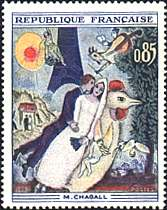
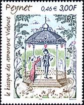
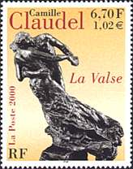
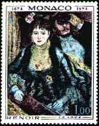
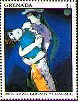
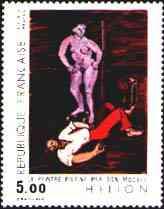
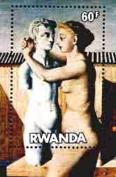

| This page is dedicated to the 250th birth anniversary of the greatest of poets, J. W. von Goethe
|
 |

CLASSIC LOVE
| Yet, to be loved, | what happiness! | What happiness, | ye gods, to love! |
|
 |
 |
 |
 |
VS. MODERN LOVE
|
 |
 |
 |
 |
| Neglecting | Breaking | Trampling | Creating a god |
LOVE OF NATURE AND MAN
| ||||||||||
All poetry on this
page by: Johann Wolfgang von Goethe
(1749-1832)
Background image: Birth of Venus (detail), by Sandro
Botticelli
(1445 - 1510)